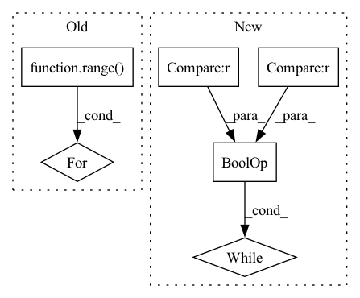

Pattern ID :29757

Before Change
cov_ = generate_simple_data(n, view_features, view_sparsity)
weights = np.random.rand(view_p, k)
for _ in range(k):
if sparsity > 0:
if sparsity < 1:
sparsity = np.ceil(sparsity * view_p).astype("int")
// first = np.random.randint(N - sparse_variables_1)
After Change
mask = np.stack((np.concatenate(([0] * sparsity, [1] * (view_p - sparsity))).astype(bool),) * k,
axis=0).T
np.random.shuffle(mask.flat)
while np.sum(np.unique(mask, axis=1, return_counts=True)[1] > 1) > 0 or np.sum(
np.sum(mask, axis=0) == 0) > 0:
np.random.shuffle(mask.flat)
weights = weights * mask
weights = _decorrelate_dims(weights, cov_)
if np.sum(np.diag((weights.T @ cov_ @ weights)) == 0) > 0:
In pattern: SUPERPATTERN
Frequency: 3
Non-data size: 6
Instances
Fragment ID: 88106193
Project Name: jameschapman19/cca_zoo
Commit Name: fcbea373cbd6a237b62fdf365a4c7a09e46701ef
Time: 2021-05-06
Author: james.chapman.19@ucl.ac.uk
File Name: cca_zoo/data.py
M Class Name: AnonimousClass
N Class Name: AnonimousClass
M Method Name: generate_covariance_data(8)
N Method Name: generate_covariance_data(8)
M Parent Class:
N Parent Class:
M File Name: cca_zoo/data.py
N File Name: cca_zoo/data.py
M Start Line: 43
M End Line: 68
N Start Line: 35
N End Line: 71
'>
Before Change
assert isinstance(env, VecEnv)
assert env.num_envs == 1
for _ in range(n_episodes):
done = False
// Reset environment
obs = env.reset()
episode_reward, episode_timesteps = 0.0, 0
After Change
assert isinstance(env, VecEnv)
assert env.num_envs == 1
while total_steps < n_steps or total_episodes < n_episodes:
done = False
// Reset environment: not needed for VecEnv
// obs = env.reset()
episode_reward, episode_timesteps = 0.0, 0
'>
Fragment ID: 88106194
Project Name: dlr-rm/stable-baselines3
Commit Name: 322399e8fefc9dceed5a13bb389ef374168e32c5
Time: 2019-09-25
Author: antonin.raffin@dlr.de
File Name: torchy_baselines/common/base_class.py
M Class Name: BaseRLModel
N Class Name: BaseRLModel
M Method Name: collect_rollouts(11)
N Method Name: collect_rollouts(9)
M Parent Class: object
N Parent Class: object
M File Name: torchy_baselines/common/base_class.py
N File Name: torchy_baselines/common/base_class.py
M Start Line: 222
M End Line: 262
N Start Line: 218
N End Line: 273
'>
Before Change
collected_frames = []
cap.set(cv2.CAP_PROP_POS_FRAMES, start_index)
for _ in range(num_frames):
_, frame = cap.read()
collected_frames.append(frame)
cap.release()
After Change
collected_frames = []
cap.set(cv2.CAP_PROP_POS_FRAMES, start_index)
while num_frames < 0 or len(collected_frames) < num_frames:
ret, frame = cap.read()
if not ret:
break
collected_frames.append(frame)
'>
Fragment ID: 88106197
Project Name: ais-bonn/vp-suite
Commit Name: d7f7e12bc7bdcd82e6ff7dc53b7c7b12bccd5eeb
Time: 2022-02-01
Author: boltres@ais.uni-bonn.de
File Name: vp_suite/utils/utils.py
M Class Name: AnonimousClass
N Class Name: AnonimousClass
M Method Name: read_video(4)
N Method Name: read_video(4)
M Parent Class:
N Parent Class:
M File Name: vp_suite/utils/utils.py
N File Name: vp_suite/utils/utils.py
M Start Line: 120
M End Line: 123
N Start Line: 118
N End Line: 125